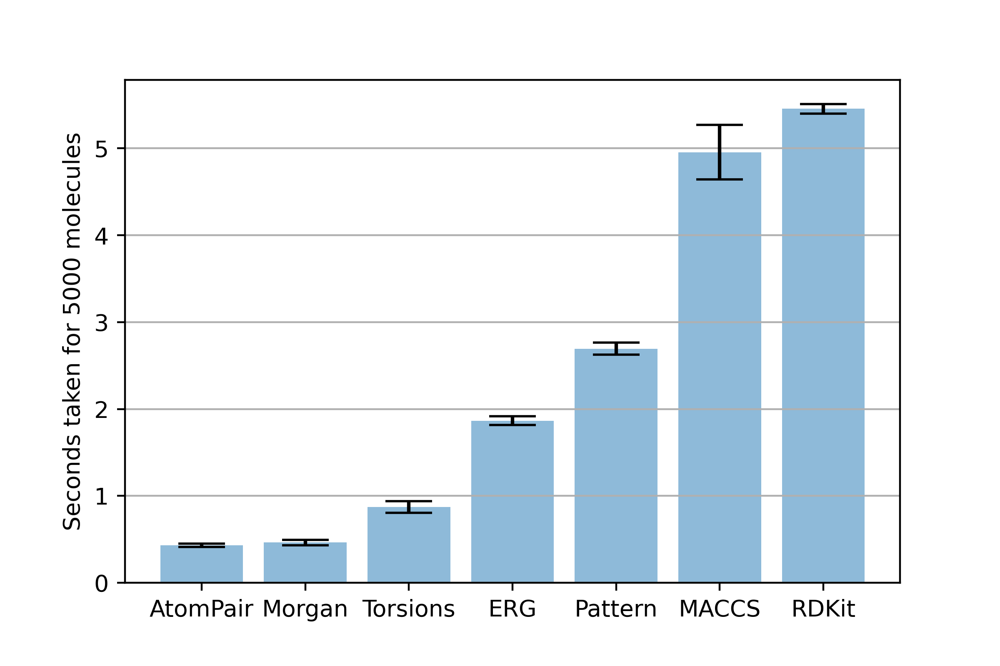

Chemical fingerprints are a method of representing chemical compounds as bit vectors. As such, they are extremely useful for machine learning approaches to cheminformatics and drug discovery. Many fingerprinting methods have been investigated and published, with pros and cons which I'm looking forward to discussing in another blog. However, the purpose of this article is a simple speedtest to determine the most efficient fingerprinting method. Benchmarking this was inspired by a recent pre-processing step in a current project where we needed to represent a dataset of over 2 million ligands as fingerprints; obviously here, speed was a key consideration. In the end, we pivoted from a fingerprinting approach to a scaffolding approach to examine molecule substructures. This doubled as a performance increase, and an easy way to group similar molecules without having to think about an exhaustive (and unfeasible) similarity comparison.
In this benchmark we're just going to look at the options provided by the open-source cheminformatics tool RDKit. From the documentation, they offer 7 different built-in fingerprinting approaches:
To get a fair estimate of the speed of generating these fingerprints, we need a dataset of small molecule compounds to use as a benchmark. In this case, we downloaded the ChEMBL database (2,136,187 molecules) and sampled 5000 random molecules using the following python code:
import time
import random
from rdkit import Chem
benchmark_molecules = list()
# load the molecules as a generator object
chembl_mols = Chem.SDMolSupplier('chembl_30.sdf')
# sample 5000 random molecules with a constant seed for reproducibility
random.seed(42)
total_molecules = 2136187
benchmark_set_indexes = random.sample(range(1, total_molecules), 5000)
for index in benchmark_set_indexes:
benchmark_molecules.append(chembl_mols[index])
Then for each fingerprint, we can use this function to time three runs of fingerprinting the whole benchmark set:
def time_fingerprint(fingerprint, radius):
seconds = list()
for i in range(3):
start = time.time()
if radius is None:
fingerprints = [fingerprint(mol) for mol in benchmark_molecules]
else:
fingerprints = [fingerprint(mol, radius) for mol in benchmark_molecules]
end = time.time()
run_time = end - start
seconds.append(run_time)
return seconds
times = dict()
times['RDKit'] = time_fingerprint(Chem.RDKFingerprint, None)
from rdkit.Chem.AtomPairs import Pairs
times['AtomPair']= time_fingerprint(Pairs.GetAtomPairFingerprint, None)
from rdkit.Chem.AtomPairs import Torsions
times['Torsions'] = time_fingerprint(Torsions.GetTopologicalTorsionFingerprintAsIntVect, None)
from rdkit.Chem import AllChem
times['Morgan'] = time_fingerprint(AllChem.GetMorganFingerprint, 2)
from rdkit.Chem import MACCSkeys
times['MACCS'] = time_fingerprint(MACCSkeys.GenMACCSKeys, None)
from rdkit.Chem import rdReducedGraphs
times['ERG'] = time_fingerprint(rdReducedGraphs.GetErGFingerprint, None)
from rdkit.Chem import rdmolops
times['Pattern'] = time_fingerprint(rdmolops.PatternFingerprint, None)
We can then plot the average times to see which fingerprint would be the most efficient when fingerprinting a huge library of small molecules
import numpy as np
import matplotlib.pyplot as plt
arrays = [np.asarray(v) for v in times.values()]
means = [np.mean(a) for a in arrays]
s_means = np.sort(means)
sort_indexes = [np.where(mean == means)[0][0] for mean in s_means]
slis = [np.sli(arrays[i]) for i in sort_indexes]
labels = [list(times.keys())[i] for i in sort_indexes]
fig, ax = plt.subplots()
ax.bar(x_pos, s_means, yerr=slis, align='center', alpha=0.5, ecolor='black', capsize=10)
ax.set_ylabel('Seconds taken for 5000 molecules')
ax.set_xticks(x_pos)
ax.set_xticklabels(labels)
ax.yaxis.grid(True)
plt.show()

So, Atom Pair fingerprints look to be the fastest (marginally). However, it looks like circular Morgan fingerprints are the most efficient representation if you're low on compute, as they encode more information than atom pair fingerprints at roughly the same cost.